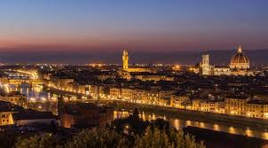

Фиренца (итал. Firenze) је велики град у централној Италији, који је октобра 2009. имао 371.060 становника.[1] У ширем подручју Фиренца-Прато-Пистоја живи 1,5 милиона људи. Фиренца је главни град истоименог округа и главни град покрајине Тоскана.
У средњем веку Фиренца је постала важно економско, културно и финансијско средиште. Током новог века, била је престоница Великог војводства Тоскане под доминацијом породица Медичи и Лорена. Град је био прва престоница Италије у периоду 1865—1871. године, после уједињења Италије.